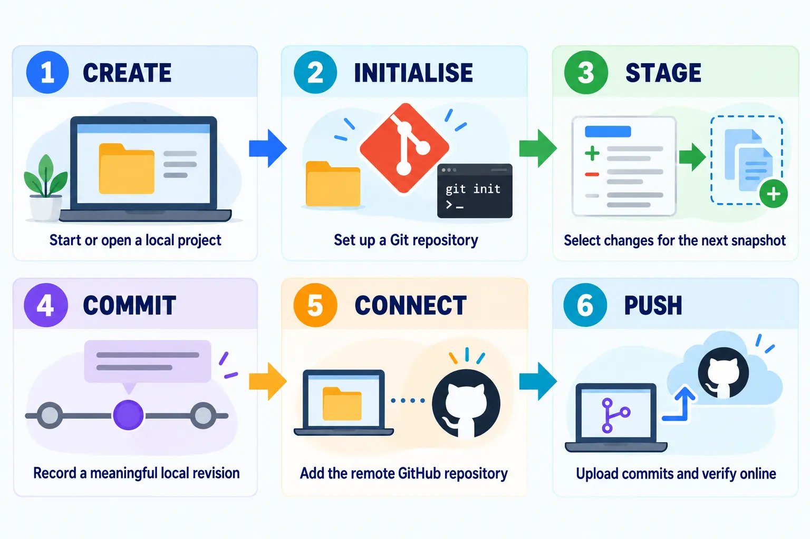
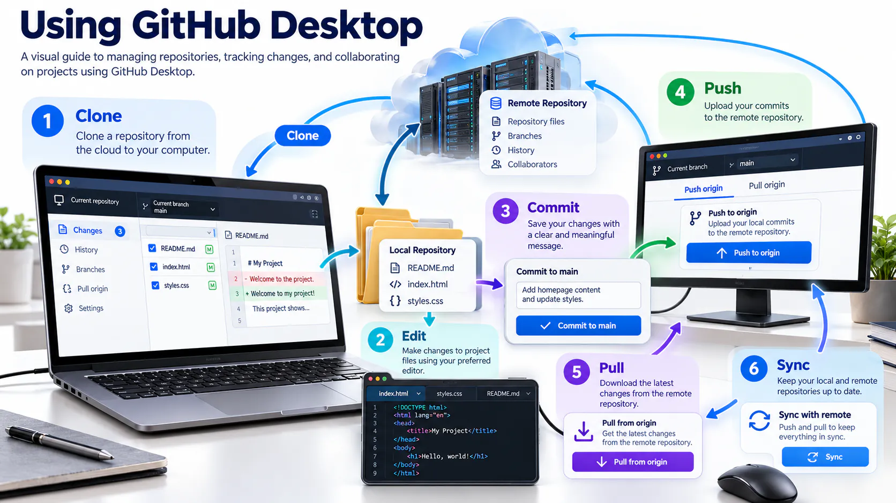
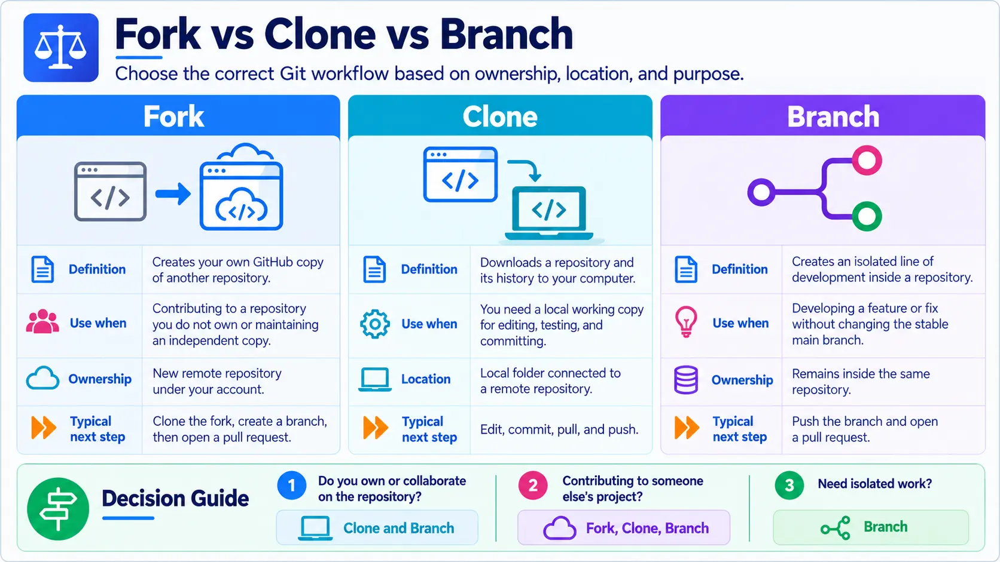
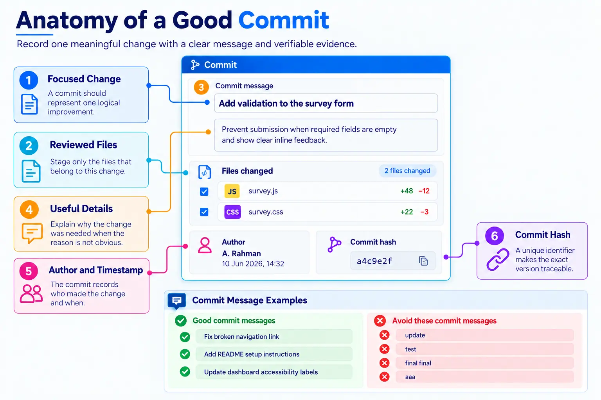
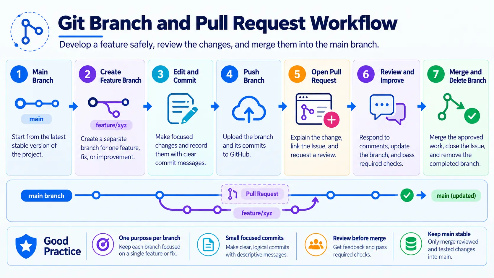

Connect your computer to GitHub
GitHub Desktop provides a visual interface for Git operations and securely connects your local project to its remote repository.

GitHub Desktop at a glance
GitHub Desktop provides a visual workflow for cloning repositories, reviewing changed files, creating commits, managing branches and synchronising with GitHub. The application simplifies common Git operations but does not remove the need to understand what each operation changes.

Fork, clone and branch are different
A fork creates an independent repository under another GitHub account. A clone downloads a repository to a computer. A branch creates a separate line of work inside a repository so changes can be developed and reviewed safely.

Write meaningful commits
A good commit represents one focused change and uses a concise message describing the result. Separate unrelated work so that the history remains understandable and individual changes can be reviewed or reversed.

Branch and pull request workflow
Create a branch for a focused task, commit and push the work, then open a pull request. The pull request provides a controlled place to explain the change, discuss feedback, run checks and approve the merge.

Install and sign in
Download
Visit desktop.github.com, download the correct version and install it.
Authenticate
Choose Sign in to GitHub.com. Your browser will open; sign in and authorise GitHub Desktop.
Configure Git
Confirm the name and email that will be attached to your commits.
Clone and update your repository
Clone
Select File → Clone repository, choose scst1133-digital-tools, select a local path, and click Clone.
Add project files
Create the structure below in the cloned folder.
scst1133-digital-tools/ ├── index.html ├── README.md ├── assets/ │ └── style.css └── images/
Commit
Return to GitHub Desktop, review the changed files, write a clear summary and select Commit to main.
Push
Select Push origin and verify the updated files on GitHub.com. Use Fetch origin or Pull origin before starting work on another computer.
GitHub Desktop and VS Code: one connected workflow
| Stage | Tool | Action |
|---|---|---|
| 1 | GitHub | Create the remote repository and confirm its README is visible. |
| 2 | GitHub Desktop | Clone the repository to a known local folder. |
| 3 | VS Code | Open the cloned folder, edit files and preview the result. |
| 4 | GitHub Desktop | Review every changed line and deselect unrelated files. |
| 5 | GitHub Desktop | Write a precise summary, commit to the current branch and push. |
| 6 | GitHub | Verify the files, commit history and rendered README online. |
Which tool does what?
VS Code is the working editor for text, Markdown, HTML and code. GitHub Desktop shows local changes and performs clone, commit, branch, pull and push actions. GitHub stores the shared remote copy and supports review, Issues, Projects and publishing.
Good practice: Review the selected files before every commit. Do not commit passwords, API keys, private data or temporary system files.
Expected output
- GitHub Desktop is installed and authenticated.
- The course repository is cloned to your computer.
- Local changes are committed and pushed successfully.